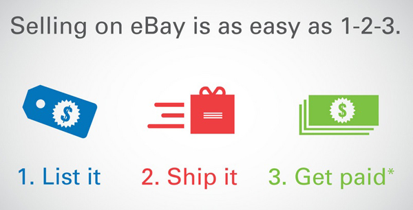

Selling On Ebay
Pros
- Global Audience
-
Ebay is a great place to market your items to a global audience! There are currently 182 million users on Ebay with over 1.3 billion items listed yearly!
- Range of Items
-
You can sell (just about) anything on Ebay.
-
From kid's toys to automobiles, if you are willing to sell it then there is a place for it on Ebay.
- Ease of Access
-
The Ebay App makes listing items unbelievably easy. It's as simple as writing an introduction, description, and adding a few pictures to start making money!
- Payment
-
Ebay utilizes PayPal as a platform to both purchase items and get paid for them. Once you have been paid for your item, transferring your money is only a few clicks away.
Cons
- Selling Fees
-
Selling fees on Ebay are the second highest amongst all of the eccomerce sites. The average item sold on Ebay requires a $0.35 listing fee as well as a 12% fee of the final selling price.
-
Items over $1,000 are have considerably lower final value fees (2%) but much higher listing fees, upwards of $35. Even if an item does not sell, you will still be charged a listing fee.
- Competition
-
Because Ebay is a global based selling platform, there is a tremendous amount of competition.
-
More competition means that there is a possibility that your listing may be buried beneath a sea of listings.
- Shipping
-
If you plan on selling through Ebay be prepared to offer free shipping. Buyers on Ebay expect free shipping on every item or they will highly unlikely to purchase it.
-
I recommend incorporating the shipping price into the listing price in order to save yourself some money.
- Power of the Buyers
-
When it comes to disputing a return, Ebay representatives will almost always take the buyers side.
-
Ebay will do whatever it takes to keep their customers coming back to buy more, this can include deciding a item return decision in their favor when they may have acted outside of the guidelines.
